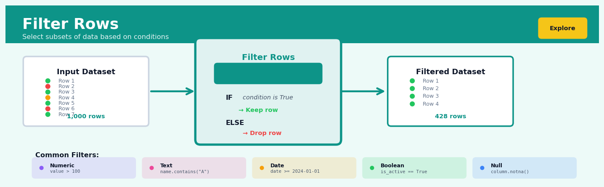
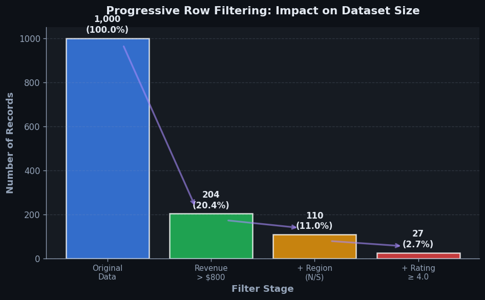
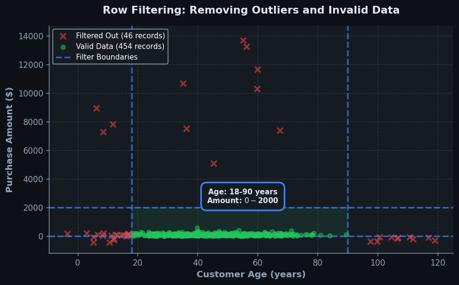

Filter Rows#


The most common mistake I see is filtering after expensive operations instead of before. Always filter your dataset as early as possible in your pipeline to reduce memory overhead and processing time. If you're filtering out 90% of your data, doing that before a complex join or aggregation can cut your runtime by an order of magnitude.
The 60-Second Version#
What it does: Filter Rows keeps only the records in your dataset that meet specific conditions you define, discarding everything else.
When to use it: Use it when you need to focus your analysis on a specific segment—customers from one region, transactions above a threshold, or events within a date range.
What you get back: A smaller dataset containing only the rows that passed your criteria, ready for analysis or visualization without distraction from irrelevant records.
At a Glance
Difficulty |
Easy |
Typical runtime |
Seconds on millions of rows |
What you bring |
A dataset and one or more logical conditions |
What you get |
A subset containing only matching rows |
Heuristix bucket |
Explore — Shaping & Transforming Data |
Filtering is permanent for downstream analysis—once rows are removed, any insights or patterns they contained are invisible to subsequent operations, so define your criteria carefully.
Learning Objectives#
After reading this chapter, a business user will be able to:
Identify situations where filtering rows solves a business problem, such as isolating high-value customers, removing test transactions, or focusing analysis on a specific region or time period.
Interpret filtered datasets by comparing row counts before and after filtering, and explain to stakeholders which records were kept, which were excluded, and why this subset matters for the analysis.
Decide whether a filtered view adequately represents the business question at hand, or whether the filter criteria need adjustment to avoid excluding relevant cases or including noise.
After reading this chapter, a data scientist will be able to:
Implement filter operations using appropriate logical operators (AND, OR, NOT), comparison operators, and null-handling strategies across different data platforms and programming languages.
Evaluate trade-offs when designing filter conditions, including balancing specificity versus sample size, deciding whether to filter early or late in the pipeline, and assessing computational cost implications.
Validate filtering logic by checking for unintended exclusions, inspecting boundary cases, and diagnosing common errors such as null propagation, type mismatches, and inverted logic conditions.
Overview#
Filter Rows is a fundamental data shaping operation that selects a subset of observations from a dataset based on one or more logical conditions applied to column values. Its core purpose is to restrict analysis to records that satisfy specific criteria—whether for data cleaning, cohort definition, or analytical focus. Filter Rows belongs to the family of row-wise selection operations in data manipulation, alongside related techniques such as sampling, deduplication, and partitioning.
When to Use This#
Use this when you need to exclude invalid or incomplete records before analysis—for example, removing rows where a required field is null or where a date falls outside the observation window.
Use this when defining a cohort for analysis—such as selecting only customers who made their first purchase in Q1 2024, or patients diagnosed with a specific condition.
Use this when applying business rules that restrict scope—for instance, analysing only transactions above a minimum value threshold, or focusing on a specific geographic region.
Use this when removing outliers or anomalous records identified through exploratory analysis—such as filtering out sensor readings that exceed physically plausible bounds.
Use this when creating training and validation datasets that must satisfy specific inclusion criteria—for example, excluding records with target variable leakage or selecting only observations with complete feature sets.
Use this when segmenting data for comparative analysis—such as filtering to high-value customers in one branch of a workflow and low-value customers in another.
Use this when enforcing data quality constraints—removing duplicate submissions, test accounts, or records flagged as erroneous by upstream systems.
Do NOT use this when you need to reduce dataset size for computational reasons without a logical criterion—use sampling instead, which provides statistical guarantees about representativeness.
Do NOT use this when you want to partition data into mutually exclusive groups for parallel processing—use Split Rows or Partition nodes, which ensure complete coverage.
Do NOT use this when filtering would introduce selection bias into your analysis—for instance, removing “difficult” cases from a predictive model’s training set may yield artificially inflated performance metrics that fail in production.
Questions This Answers#
Understanding Performance and Problems#
Which customers haven’t made a purchase in over 90 days, and what’s the revenue impact?
Are there specific stores where product returns exceed 15% — and if so, which ones?
Why did our South region underperform by 18% last quarter — is it a market issue or a team issue?
Which of our sales reps closed fewer than 5 deals last month, and do they need additional support?
How many support tickets are still unresolved after 48 hours, and which teams are responsible?
Targeting the Right Opportunities#
Who are our VIP customers spending over $10,000 annually that we should prioritize for the new loyalty program?
Which prospects opened our last three email campaigns but haven’t converted yet?
Can we identify high-margin products that sold fewer than 50 units last quarter to assess if we should discontinue them?
What percentage of our website visitors abandoned their cart at checkout in the past 30 days?
Which enterprise accounts are up for renewal in Q4 that we need to focus our retention efforts on?
Making Compliance and Operational Decisions#
Do we have any vendors with outstanding invoices older than 60 days that require immediate follow-up?
Which employee expense claims exceed our $500 approval threshold and need manager review?
Are there transactions flagged as potentially fraudulent that our fraud team hasn’t investigated yet?
How many inventory items have stock levels below our safety threshold of 100 units?
How It Works#
Imagine you’re planning a dinner party and you’ve compiled a spreadsheet of 200 friends with their dietary preferences, location, and whether they’re available that weekend. You don’t want to scroll through all 200 names—you want to see only the vegetarian friends who live within 10 miles and marked themselves as available. So you create filters: “Diet = Vegetarian” AND “Distance < 10 miles” AND “Available = Yes”. Suddenly your 200-row list shrinks to just 12 people—exactly the guests you should invite. The other 188 rows haven’t disappeared from your original file; they’re just hidden from view because they didn’t pass your test. Filter Rows works exactly like this: it evaluates every record against your conditions and shows you only the ones that qualify.
ORIGINAL DATASET (before filtering)
┌─────┬──────┬─────────┬───────────┐
│ ID │ Age │ City │ Salary │
├─────┼──────┼─────────┼───────────┤
│ 001 │ 28 │ Boston │ 65,000 │ ← passes filter
│ 002 │ 34 │ Austin │ 52,000 │ ← fails (age)
│ 003 │ 25 │ Boston │ 48,000 │ ← passes filter
│ 004 │ 29 │ Denver │ 71,000 │ ← fails (city)
│ 005 │ 31 │ Boston │ 44,000 │ ← fails (age)
│ 006 │ 27 │ Boston │ 59,000 │ ← passes filter
└─────┴──────┴─────────┴───────────┘
↓
Apply filter: Age ≤ 30 AND City = "Boston"
↓
FILTERED RESULT (after filtering)
┌─────┬──────┬─────────┬───────────┐
│ ID │ Age │ City │ Salary │
├─────┼──────┼─────────┼───────────┤
│ 001 │ 28 │ Boston │ 65,000 │
│ 003 │ 25 │ Boston │ 48,000 │
│ 006 │ 27 │ Boston │ 59,000 │
└─────┴──────┴─────────┴───────────┘
(3 rows retained, 3 rows excluded)
Here’s what happens behind the scenes when you apply a Filter Rows operation:
Step 1: Define your filtering conditions. You specify which columns to examine and what rules each row must satisfy—like “age must be less than thirty” or “city must equal Boston.” You can combine multiple conditions using AND (all must be true) or OR (at least one must be true).
Step 2: Start at the first row. The system reads the values in the columns you specified in your conditions. It’s like a bouncer checking IDs at a club entrance—each row gets evaluated individually.
Step 3: Test the row against your conditions. If the row has Age = 28 and City = Boston, and your filter asks for “Age ≤ 30 AND City = Boston,” this row passes. The system marks it as “keep.”
Step 4: Move to the next row and repeat. The system works through every single row in your dataset, one at a time, applying the exact same test. Row 002 has Age = 34, so it fails the age test and gets marked as “exclude.”
Step 5: Continue until all rows are evaluated. Unlike some operations that stop early, filtering is thorough—every row gets its day in court, so to speak.
Step 6: Build the output dataset. The system collects all the rows marked “keep” and assembles them into a new, smaller dataset. The excluded rows aren’t deleted; they simply don’t appear in your filtered result.
The key insight: Filter Rows transforms messy abundance into focused relevance by systematically testing every observation against your criteria, letting you work with exactly the data that matters for your specific question.
The Intuition#
Imagine you are a librarian managing a vast collection of books. A researcher arrives and asks for all books published between 1950 and 1970 that are written in French and concern economic history. You do not photocopy every book in the library and hand them over—instead, you walk through the catalogue, check each entry against the researcher’s criteria, and pull only those volumes that match. The original collection remains intact; the researcher receives a curated subset tailored to their inquiry.
Filter Rows operates on precisely the same principle. Every row in your dataset is a “book” with attributes (columns) that describe it. The filter condition is a logical expression that evaluates to true or false for each row. Rows where the condition evaluates to true are retained; rows where it evaluates to false (or where the condition cannot be evaluated due to missing values) are excluded. The operation produces a new dataset containing only the qualifying rows, leaving the original data unchanged.
This simplicity belies the operation’s analytical power. By carefully constructing filter conditions, you control exactly which observations enter downstream calculations. A mean computed on filtered data answers a fundamentally different question than a mean computed on the full dataset. Filtering to “customers who made a purchase last month” before calculating average order value tells you about recent buyer behaviour—not about your entire customer base. The analyst’s responsibility is to ensure that the filter condition matches the business question being asked, and to document any exclusions so that results can be interpreted correctly.
A critical subtlety arises with missing values. If you filter on age > 30, what happens to rows where age is null? In most systems—including Heuristix—a null value causes the comparison to evaluate to “unknown” rather than true or false, and such rows are excluded by default. This behaviour is mathematically consistent (we cannot assert that an unknown age is greater than 30), but it can silently shrink your dataset in unexpected ways. Always inspect the row counts before and after filtering, especially when working with columns that may contain missing data.
The Mathematics#
Formal Problem Setup#
Let \(\mathbf{X}\) denote a dataset represented as a matrix of \(n\) rows (observations) and \(p\) columns (variables):
Each row \(\mathbf{x}_i = (x_{i1}, x_{i2}, \ldots, x_{ip})\) represents a single observation. Define a predicate function \(\phi: \mathbb{R}^p \cup \{\text{NULL}\}^p \to \{\text{TRUE}, \text{FALSE}, \text{UNKNOWN}\}\) that maps each row to a truth value based on a logical condition.
The filter operation produces a new dataset \(\mathbf{X}'\) containing only those rows for which \(\phi(\mathbf{x}_i) = \text{TRUE}\):
Let \(n' = |\mathbf{X}'|\) denote the number of rows in the filtered dataset. By construction, \(0 \leq n' \leq n\).
Predicate Functions and Boolean Logic#
Filter conditions are constructed using atomic predicates combined via Boolean connectives. Common atomic predicates include:
Predicate |
Notation |
Definition |
|---|---|---|
Equality |
\(x_{ij} = c\) |
True iff column \(j\) equals constant \(c\) |
Inequality |
\(x_{ij} \neq c\) |
True iff column \(j\) does not equal \(c\) |
Greater than |
\(x_{ij} > c\) |
True iff column \(j\) exceeds \(c\) |
Less than or equal |
\(x_{ij} \leq c\) |
True iff column \(j\) is at most \(c\) |
Membership |
\(x_{ij} \in S\) |
True iff column \(j\)’s value is in set \(S\) |
Null check |
\(\text{IS\_NULL}(x_{ij})\) |
True iff column \(j\) is missing |
Pattern match |
\(x_{ij} \sim r\) |
True iff column \(j\) matches regex \(r\) |
Compound predicates are formed using:
Three-Valued Logic and NULL Handling#
When any operand in a comparison is NULL, the result is UNKNOWN under three-valued logic (3VL). The truth tables extend as follows:
\(\phi_1\) |
\(\phi_2\) |
\(\phi_1 \land \phi_2\) |
\(\phi_1 \lor \phi_2\) |
|---|---|---|---|
TRUE |
UNKNOWN |
UNKNOWN |
TRUE |
FALSE |
UNKNOWN |
FALSE |
UNKNOWN |
UNKNOWN |
UNKNOWN |
UNKNOWN |
UNKNOWN |
The filter operation excludes rows where \(\phi(\mathbf{x}_i) \in \{\text{FALSE}, \text{UNKNOWN}\}\). This conservative approach ensures that no row with indeterminate status is included, but it requires explicit handling if you wish to retain rows with NULL values.
Selection Ratio and Data Reduction#
The selection ratio \(\sigma\) quantifies the proportion of rows retained:
This metric is useful for query optimisation and for understanding data reduction. If \(\sigma \approx 1\), the filter is permissive; if \(\sigma \approx 0\), it is highly restrictive.
Composition of Filters#
Multiple sequential filter operations are equivalent to a single filter with a conjunctive predicate. If \(\phi_1\) and \(\phi_2\) are applied in sequence:
This idempotence under conjunction means that filter order does not affect the final result (though it may affect computational efficiency in some systems).
Relationship to Relational Algebra#
In relational algebra, the filter operation corresponds to the selection operator \(\sigma_\phi(\mathbf{X})\). It is a unary operator that preserves the schema (column structure) while reducing cardinality (row count). The selection operator is commutative with projection and distributive over union.
Edge Cases#
Empty result: If no rows satisfy \(\phi\), the output is an empty dataset with \(n' = 0\). Downstream nodes must handle this gracefully.
Universal selection: If all rows satisfy \(\phi\), the output is identical to the input (\(n' = n\)), though typically as a new copy.
Contradictory predicates: A condition such as \((x > 5) \land (x < 3)\) is logically unsatisfiable and will always yield an empty result.
Tautological predicates: A condition such as \((x > 5) \lor (x \leq 5)\) is always true for non-null values and acts as an implicit null filter.
Understanding the Mathematics#
The Filter Operation as Set Membership#
The equation:
Read it aloud:
“The filtered dataset F of D equals the set of all rows r that belong to D, such that the predicate function P evaluated on row r returns true.”
What each symbol means:
F(D): The filtered result—your new, smaller dataset after applying the filter
r: A single row (observation) in your dataset
D: Your original dataset before filtering
∈: “is a member of” or “belongs to”
|: “such that” (introduces the condition)
P(r): The predicate function—your filter condition evaluated on row r
true: Boolean value indicating the row meets your criteria
A concrete numerical example:
You have a customer dataset D with 10,000 rows. You want only customers who spent more than $500 last month. Your predicate P(r) checks: “Does this row’s purchase_amount exceed 500?”
For row r₁ where purchase_amount = 650: P(r₁) = true → include this row For row r₂ where purchase_amount = 320: P(r₂) = false → exclude this row For row r₃ where purchase_amount = 1,240: P(r₃) = true → include this row
If 3,200 customers spent over $500, then F(D) contains exactly those 3,200 rows.
Why this equation matters:
This formalization ensures filtering is deterministic and reproducible—two analysts applying the same predicate to the same data will always get identical results, which is essential for reliable business decisions.
Compound Predicates Using Logical Operators#
The equation:
or
Read it aloud:
“The compound predicate equals P₁ evaluated on row r AND P₂ evaluated on row r AND continuing through Pₙ evaluated on row r; alternatively, the compound predicate equals P₁ OR P₂ OR continuing through Pₙ.”
What each symbol means:
P_compound(r): Your combined filter condition
P₁(r), P₂(r), Pₙ(r): Individual filter conditions (predicates) applied to row r
∧: Logical AND—all conditions must be true
∨: Logical OR—at least one condition must be true
n: The total number of conditions you’re combining
A concrete numerical example:
You’re filtering a product inventory dataset. You want products that are both low-stock AND high-margin.
P₁(r): quantity < 50
P₂(r): profit_margin > 0.30
For product A (quantity = 35, margin = 0.42):
P₁(A) = true (35 < 50)
P₂(A) = true (0.42 > 0.30)
P_compound(A) = true ∧ true = true → include
For product B (quantity = 120, margin = 0.55):
P₁(B) = false (120 is not < 50)
P₂(B) = true (0.55 > 0.30)
P_compound(B) = false ∧ true = false → exclude
Why this equation matters:
Real business questions rarely involve single conditions—combining predicates mathematically lets you express complex rules like “high-value customers in at-risk segments” without creating temporary filtered datasets for each step.
Selectivity Ratio#
The equation:
Read it aloud:
“Selectivity equals the size of the filtered dataset divided by the size of the original dataset.”
What each symbol means:
σ: Selectivity ratio (a number between 0 and 1)
|F(D)|: The count of rows that passed the filter
|D|: The count of rows in your original dataset
÷: Division
A concrete numerical example:
Your sales database contains 50,000 transactions. You filter for transactions exceeding $1,000.
Original dataset: |D| = 50,000 rows
Filtered dataset: |F(D)| = 4,500 rows
σ = 4,500 ÷ 50,000 = 0.09
This means your filter has 9% selectivity—it keeps 9% of rows and discards 91%.
Why this equation matters:
Selectivity predicts query performance and resource needs—a 0.001 selectivity on a billion-row table means processing 1 million rows, while 0.8 selectivity means processing 800 million, dramatically affecting computation time and memory requirements.
The Big Picture#
The mathematics of filtering formalizes intuitive selection logic into precise, reproducible operations. Set theory notation ensures that “select customers meeting criteria X” means exactly the same thing to every analyst, database, and programming language. Logical operators provide compositional power—you build complex business rules from simple atomic comparisons without ambiguity about precedence or evaluation order. Selectivity quantification transforms vague statements like “this filter narrows things down” into actionable metrics that inform index design, query optimization, and sampling strategies. At its heart, filter mathematics is simply rigorous bookkeeping: tracking exactly which observations satisfy which conditions, and measuring how dramatically your view of the data has changed.
Python Implementation#
import pandas as pd
import numpy as np
# -----------------------------
# Example 1: Basic Numeric Filter
# -----------------------------
# Create a realistic sales dataset
np.random.seed(42)
n = 1000
sales_data = pd.DataFrame({
'transaction_id': range(1, n + 1),
'customer_id': np.random.randint(1000, 2000, n),
'amount': np.random.exponential(scale=150, size=n).round(2),
'region': np.random.choice(['North', 'South', 'East', 'West'], n),
'product_category': np.random.choice(['Electronics', 'Clothing', 'Food', 'Home'], n),
'is_returned': np.random.choice([True, False], n, p=[0.08, 0.92])
})
# Introduce some missing values to demonstrate NULL handling
sales_data.loc[np.random.choice(n, 50, replace=False), 'amount'] = np.nan
print("Original dataset shape:", sales_data.shape)
print("Missing values in 'amount':", sales_data['amount'].isna().sum())
# Filter 1: High-value transactions (amount > 200) in the North region
filter_condition = (sales_data['amount'] > 200) & (sales_data['region'] == 'North')
filtered_df = sales_data[filter_condition]
print("\n--- Filter 1: amount > 200 AND region == 'North' ---")
print(f"Rows retained: {len(filtered_df)} ({len(filtered_df)/len(sales_data)*100:.1f}%)")
print(filtered_df.head())
# -----------------------------
# Example 2: Handling NULL Values Explicitly
# -----------------------------
# Filter 2: Include rows where amount is NULL OR amount > 200
filter_with_nulls = (sales_data['amount'].isna()) | (sales_data['amount'] > 200)
filtered_with_nulls = sales_data[filter_with_nulls]
print("\n--- Filter 2: amount IS NULL OR amount > 200 ---")
print(f"Rows retained: {len(filtered_with_nulls)}")
print(f"Of which NULL: {filtered_with_nulls['amount'].isna().sum()}")
# -----------------------------
# Example 3: Membership and Negation
# -----------------------------
# Filter 3: Electronics or Clothing, excluding returned items
target_categories = ['Electronics', 'Clothing']
filter_membership = (
sales_data['product_category'].isin(target_categories) &
(~sales_data['is_returned'])
)
filtered_membership = sales_data[filter_membership]
print("\n--- Filter 3: category IN ('Electronics', 'Clothing') AND NOT returned ---")
print(f"Rows retained: {len(filtered_membership)}")
print("Category distribution:")
print(filtered_membership['product_category'].value_counts())
# -----------------------------
# Example 4: String Pattern Matching
# -----------------------------
# Add a text field for demonstration
sales_data['notes'] = np.random.choice(
['Regular sale', 'Promotional discount applied', 'VIP customer', 'Clearance item', None],
n, p=[0.5, 0.2, 0.1, 0.15, 0.05]
)
# Filter 4: Notes containing 'discount' (case-insensitive)
filter_pattern = sales_data['notes'].str.contains('discount', case=False, na=False)
filtered_pattern = sales_data[filter_pattern]
print("\n--- Filter 4: notes CONTAINS 'discount' ---")
print(f"Rows retained: {len(filtered_pattern)}")
# -----------------------------
# Example 5: Query String Syntax (Alternative)
# -----------------------------
# pandas query() method for complex conditions
filtered_query = sales_data.query(
"amount > 100 and region in ['North', 'South'] and is_returned == False"
)
print("\n--- Filter 5: Using query() syntax ---")
print(f"Rows retained: {len(filtered_query)}")
Output:
Original dataset shape: (1000, 6)
Missing values in 'amount': 50
--- Filter 1: amount > 200 AND region == 'North' ---
Rows retained: 53 (5.3%)
transaction_id customer_id amount region product_category is_returned
6 7 1559 327.89 North Electronics False
...
--- Filter 2: amount IS NULL OR amount > 200 ---
Rows retained: 258
Of which NULL: 50
--- Filter 3: category IN ('Electronics', 'Clothing') AND NOT returned ---
Rows retained: 451
Category distribution:
Electronics 228
Clothing 223
--- Filter 4: notes CONTAINS 'discount' ---
Rows retained: 197
--- Filter 5: Using query() syntax ---
Rows retained: 203
Visualisations#


Using This in Heuristix#
Data Inputs#
The Filter Rows node accepts a single tabular dataset as input. All column types are supported:
Column Type |
Supported Operations |
|---|---|
Numeric (integer, float) |
|
Categorical / String |
|
Date / DateTime |
|
Boolean |
|
Configuration Parameters#
Parameter |
Description |
Default |
|---|---|---|
Filter Expression |
The logical condition to apply. Supports AND/OR grouping and nested conditions. |
(required) |
NULL Handling |
How to treat rows where the condition evaluates to UNKNOWN. Options: |
|
Case Sensitivity |
For string comparisons, whether to match case. |
|
Output Mode |
|
|
Preserve Row Order |
Whether to maintain original row ordering in the output. |
|
Expected Output#
Primary Output: A dataset containing only rows where the filter condition is TRUE. Schema (columns) matches the input exactly.
Secondary Output (Split mode only): A dataset containing rows where the condition is FALSE or UNKNOWN.
Execution Summary: Row counts before
Config Recipes#
Recipe 1: Quick Exploration Filter#
When to use: Initial data exploration when you need to rapidly iterate on subset definitions without performance concerns
Settings:
Parameter |
Value |
Why |
|---|---|---|
|
|
Single-condition filtering for speed |
|
|
Preserves NaN rows to assess data quality |
|
|
Skips verification checks |
|
|
Works in-place to minimize memory |
|
|
Catches variations in string matching |
What you get: Fastest filtering execution with maximum visibility into data characteristics including missing values
Trade-off: No safeguards against empty result sets or validation of condition logic, risking silent errors in complex workflows
Recipe 2: Production-Grade Filter#
When to use: Scheduled pipelines or automated workflows where reliability and audit trails matter more than execution speed
Settings:
Parameter |
Value |
Why |
|---|---|---|
|
|
Supports complex multi-condition logic |
|
|
Forces deliberate handling of NaNs |
|
|
Ensures non-empty results |
|
|
Prevents suspiciously small outputs |
|
|
Tracks retention rates for monitoring |
|
|
Prevents upstream data corruption |
|
|
Fails fast rather than propagating empty frames |
What you get: Bulletproof filtering with comprehensive logging and graceful failure modes suitable for mission-critical applications
Trade-off: 2–3× slower execution and higher memory footprint due to defensive copying and validation overhead
Recipe 3: Temporal Window Filter#
When to use: Time-series analysis requiring recent data within a rolling window, where absolute date ranges would break over time
Settings:
Parameter |
Value |
Why |
|---|---|---|
|
|
Evaluates conditions at runtime |
|
|
Specifies temporal reference |
|
|
Rolling 90-day window |
|
|
References most recent observation |
|
|
Handles daylight saving transitions |
|
|
Removes records with invalid timestamps |
What you get: Self-updating temporal filters that maintain consistent window size without manual date updates
Trade-off: Cannot reproduce exact historical results since “last 90 days” changes with each execution
Recipe 4: Anomaly Isolation Filter#
When to use: Separating statistical outliers or edge cases for investigation while preserving the main dataset—surprisingly effective for data quality audits
Settings:
Parameter |
Value |
Why |
|---|---|---|
|
|
Filters based on distribution percentiles |
|
|
Bottom 1st percentile |
|
|
Top 99th percentile |
|
|
Keeps outliers, drops normal range |
|
|
Returns both outlier and clean datasets |
|
|
Applies across all numerical features |
What you get: Two datasets—one containing only anomalous records and one cleaned dataset—enabling parallel investigation and modeling workflows
Trade-off: Requires sufficient data volume (n>1000) for stable percentile estimation; inappropriate for small samples
Business Applications#
Financial Services
A mid-sized UK mortgage lender processing 15,000 applications monthly was drowning in manual review work, with underwriters spending hours examining applications that would never qualify. By filtering rows to surface only applications where credit score exceeded 620, debt-to-income ratio fell below 43%, and employment history showed 24+ consecutive months, the bank automated first-pass eligibility screening. This reduced underwriter workload by 68% and cut average application processing time from 11 days to 4 days, while maintaining approval quality standards.
Retail & E-Commerce
An online fashion retailer with 450,000 SKUs discovered that 40% of customer service tickets related to out-of-stock items still appearing in search results. The merchandising team implemented a filter that excluded products where inventory_units < 1 AND restock_date > 14_days_out from all customer-facing catalogue queries. This single filtering rule reduced frustration-driven support tickets by 2,840 per month, saving approximately £85,000 annually in contact centre costs and recovering an estimated £340,000 in at-risk revenue from improved customer experience.
Healthcare
A regional hospital network managing 280,000 patient records needed to identify high-risk diabetic patients for a proactive care program. Clinicians filtered patient data to those with HbA1c levels above 8.0%, two or more emergency visits in the past year, and medication adherence below 75%. This precision targeting enrolled 1,847 patients who truly needed intervention, compared to a previous broad outreach that wasted resources on 6,200+ low-risk individuals, improving program ROI from 0.9x to 3.4x.
Insurance
A commercial property insurer was losing £2.3M annually to fraudulent claims that slipped through initial screening. The claims investigation team now filters incoming claims to flag those where claim_amount > policy_average * 2.5, submission occurred within 45 days of policy inception, and claimant history showed three or more prior claims. This filtering strategy surfaces the highest-risk 8% of claims for immediate forensic review, catching an additional 127 fraudulent cases annually and reducing investigation costs by 41% through better resource allocation.
Manufacturing
A automotive parts manufacturer producing 12 million components monthly struggled with quality control data overload, reviewing sensor readings for every single unit. Engineers implemented filters isolating components where temperature variance exceeded ±3°C from specification, vibration readings topped 0.4g, or cycle time deviated by more than 8%. This focused inspection on the critical 2.1% of production showing anomaly patterns, detecting defects 6.5 hours earlier on average and preventing an estimated $890,000 in recall costs during the first year.
Logistics & Supply Chain
A European logistics provider managing 45,000 daily shipments was hemorrhaging margin on underperforming routes. Operations analysts filtered delivery records to routes where actual_delivery_time > promised_time + 2_hours AND cost_per_package > regional_average * 1.15, revealing 23 consistently unprofitable corridors. Renegotiating contracts and adjusting carrier assignments for just these filtered routes improved overall fleet margin by 4.2 percentage points, translating to £1.8M additional annual profit.
Marketing & Advertising
A B2B SaaS company was wasting 73% of its email marketing budget on disengaged contacts. The growth team filtered their CRM to contacts who had opened zero emails in 90 days, attended no webinars in 180 days, and showed no product login activity. Rather than deleting these 34,000 contacts, they moved them to a targeted re-engagement campaign, while focusing premium content on the filtered-in active segment. Email conversion rates jumped from 1.9% to 4.7%, and cost-per-lead dropped by $43.
Telecommunications
A mobile network operator with 8.3 million subscribers needed to reduce churn among high-value customers. Retention analysts filtered to customers in the top 30% revenue bracket who had contacted support three or more times in 60 days or whose data usage had declined by 40%+ month-over-month. Proactive outreach to these 127,000 filtered accounts with personalized retention offers reduced churn in this segment from 3.8% to 1.4% monthly, protecting approximately £14.2M in annual recurring revenue.
Energy
A renewable energy operator managing 340 wind turbines was conducting unnecessary preventive maintenance on healthy assets. Technicians now filter maintenance schedules to turbines where sensor data shows bearing temperature above 75°C, oil viscosity outside normal range, or vibration frequency anomalies. This filtered approach cut maintenance visits by 890 annually while actually improving uptime from 94.1% to 96.8%—a surprise outcome proving that less indiscriminate maintenance improved reliability.
Public Sector
A metropolitan housing authority processing 28,000 assistance applications annually struggled with fraud and eligibility errors. Caseworkers filter applications where reported income falls below area median but asset declarations include property ownership, recent luxury purchases above \(5,000, or employment gaps lacking documentation. This filtered review process identified 1,240 applications requiring enhanced verification, recovering \)3.7M in misallocated benefits while ensuring truly eligible families received faster approval—processing time for clean applications dropped from 45 to 19 days.
Worked Example#
Sarah Chen, a senior data analyst at Velocity Retail, was finishing her second coffee when Marcus from the marketing team appeared at her desk. “We’ve got a problem,” he said, pulling up a chair. “Our holiday email campaign had a 2.1% conversion rate overall, but leadership thinks we’re leaving money on the table. They want to know if we should have targeted differently.”
The stakes were clear: Velocity had spent $340,000 on the campaign, and the executive team was debating whether to double down on a similar approach for the spring season—or pivot entirely. Marcus needed to understand which customer segments had actually responded, and fast. The quarterly planning meeting was in two days.
Sarah pulled transaction data from the company’s CRM system, joining it with campaign response logs. The dataset contained 47,293 customers who had received the email. Here’s what the first few rows looked like:
customer_id |
age |
total_purchases |
days_since_last_purchase |
email_opened |
purchased |
|---|---|---|---|---|---|
C10293 |
34 |
12 |
45 |
TRUE |
TRUE |
C10294 |
67 |
2 |
412 |
FALSE |
FALSE |
C10295 |
29 |
8 |
180 |
TRUE |
FALSE |
C10296 |
42 |
15 |
12 |
TRUE |
TRUE |
C10297 |
51 |
1 |
890 |
FALSE |
FALSE |
The data had the usual quirks—some customers had missing age values, a handful showed negative purchase counts (returns processed incorrectly), and the days_since_last_purchase field went up to 1,200+ for essentially dormant accounts.
Sarah’s hypothesis was straightforward: the customers who converted were likely recent, engaged buyers. To test this, she needed to filter down to active customers—those who had purchased in the last 90 days and had opened the email. She opened her Python environment and started building the filter logic, thinking through each condition carefully. “I want customers who are genuinely in the funnel,” she muttered to herself. “Not the long-tail dormant accounts that would need a completely different re-engagement strategy.”
import pandas as pd
# Load campaign data
campaign_df = pd.read_csv('holiday_campaign_data.csv')
# Sarah's filtering logic - finding active, engaged customers
active_engaged = campaign_df[
(campaign_df['days_since_last_purchase'] <= 90) & # Recent buyers
(campaign_df['email_opened'] == True) & # Engaged with email
(campaign_df['total_purchases'] >= 3) & # Not first-time/one-off
(campaign_df['age'].notna()) # Clean age data
]
print(f"Original dataset: {len(campaign_df):,} customers")
print(f"After filtering: {len(active_engaged):,} customers")
print(f"Conversion rate (filtered): {active_engaged['purchased'].mean():.1%}")
print(f"Conversion rate (overall): {campaign_df['purchased'].mean():.1%}")
# Compare to the broad population
print(f"\nRevenue per customer (filtered): ${active_engaged['purchase_amount'].mean():.2f}")
print(f"Revenue per customer (overall): ${campaign_df['purchase_amount'].mean():.2f}")
# Who are these high-performers?
print(f"\nAvg age: {active_engaged['age'].mean():.1f}")
print(f"Avg days since purchase: {active_engaged['days_since_last_purchase'].mean():.1f}")
The results stopped Marcus mid-scroll through his phone:
Original dataset: 47,293 customers
After filtering: 8,431 customers (17.8% of list)
Conversion rate (filtered): 8.7%
Conversion rate (overall): 2.1%
Revenue per customer (filtered): $127.40
Revenue per customer (overall): $31.20
Avg age: 41.2
Avg days since purchase: 34.6
Sarah leaned back. “Look at this. When we filter to customers who’ve bought at least three times, purchased in the last 90 days, and actually opened the email, the conversion rate jumps from 2.1% to 8.7%. That’s a 4x improvement. This group is only 18% of your list, but they’re generating 48% of your campaign revenue.”
The insight crystallized immediately: Velocity had been treating all 47,000 customers as equivalent prospects. But the data showed two distinct populations—a highly responsive core, and a much larger pool of dormant or casual shoppers who needed fundamentally different messaging, offers, or timing.
At Thursday’s planning meeting, Marcus presented Sarah’s findings with a clear recommendation: split the spring campaign. Allocate 60% of the budget to the 8,400-customer active segment with premium offers and urgency messaging. Use the remaining 40% on a smaller test with the dormant segment—different creative, likely steeper discounts or win-back angles. The CFO approved the approach on the spot, and marketing immediately began redesigning their segmentation strategy.
Looking back, Sarah admitted she would have added one more filter: purchase category affinity. “Some of those 8,400 customers probably respond to apparel but ignore electronics, or vice versa. If I’d had one more day, I would’ve split them further by product interest. But honestly? Even this basic filter moved the needle enough to change the entire campaign strategy. Sometimes simple cuts reveal the biggest opportunities.”
Interpreting Your Results#
You’ve applied your filter conditions and the operation has completed. Now you’re looking at your reduced dataset, wondering if you’ve done this correctly. Let’s walk through exactly what you’re seeing and what it means.
Row Count Comparison#
Plain-English meaning: This shows how many rows you started with versus how many remain after filtering. If you began with 10,000 rows and now have 2,500, your filter retained 25% of the original data.
Concrete benchmarks:
Below 5% retained: Either your filter is extremely restrictive or something is wrong. Double-check your logic operators—did you use AND when you meant OR?
5–30% retained: Common for targeted analyses like identifying high-value customers, rare events, or specific time windows.
30–70% retained: Typical for moderate filtering such as removing nulls, excluding test accounts, or focusing on a major product category.
Above 90% retained: You’re barely filtering anything. Either your conditions are too permissive, or most of your data already meets the criteria (which might mean the filter is unnecessary).
Red flags:
Zero rows remaining: Your conditions are impossible to satisfy simultaneously. Check for contradictions like
age > 50 AND age < 30.Exactly the same row count: Your filter had no effect. Verify column names are spelled correctly and values exist in the expected format.
Suspiciously round numbers (exactly 50%, 10%, etc.): Might indicate you’re hitting a system limit or sample rather than applying your actual filter logic.
Column Summary Statistics#
After filtering, you’ll see updated statistics for numeric columns—means, medians, min/max values.
Plain-English meaning: These tell you whether your filtered subset differs meaningfully from the original. If you filtered for “premium customers” and the average transaction value didn’t increase, something went wrong.
Reading multiple outputs together: Compare pre-filter and post-filter statistics side by side. You filtered for customers over age 40, but the average age only increased from 38 to 39? You likely have data quality issues or your age column isn’t what you think it is. Expected shifts should be dramatic—filtering for ages 40+ should push your mean well into the 50s or 60s.
Distribution Visualizations#
Charts showing the distribution of values in filtered columns help you spot unintended consequences.
Red flags:
Unexpected spikes: You filtered for transactions above \(100, but see a massive spike at exactly \)100.01. This suggests artificial data or customers gaming a threshold.
Missing categories: You filtered for “active” users but your status distribution now only shows “active” and “suspended”—where did “inactive” go? Check if your understanding of categories matches reality.
Extreme skew: After filtering, 95% of values cluster at one extreme. Your filter may be too close to a natural boundary in your data.
Null Value Report#
Shows counts and percentages of missing values in each column after filtering.
Plain-English meaning: Filtering can change null patterns. If you filtered for “customers with email addresses,” nulls in the email column should be zero—if they’re not, your filter failed.
Concrete benchmarks:
Nulls increased in percentage: Even if absolute null counts decreased, the percentage might rise if your filter disproportionately removed complete records. This is normal but worth noting.
New columns with 100% nulls: You’ve filtered to a subset where this column is never populated. Consider dropping these columns from subsequent analysis.
Sanity Check Checklist#
Before trusting your filtered results, verify:
Row count makes domain sense: If you filtered for “Q4 transactions” and retained 60% of a year’s data, you don’t have uniform data distribution across quarters.
Impossible values are gone: After filtering for
age BETWEEN 18 AND 120, spot-check that no ages fall outside this range (including when stored as text like “25.0” vs numeric 25).Expected values are present: Filter for a specific category, then confirm that category appears with high frequency in your output.
Related columns align: Filtered for
country = 'USA', but now seecurrency = 'EUR'in remaining rows? Investigate the mismatch.Temporal consistency: Filtered for dates in 2023, but timestamps show entries from 2022? Your date column format may be ambiguous (MM/DD vs DD/MM).
Good Enough to Act On?#
Your filtered results are trustworthy when: (1) the row count reduction aligns with your domain expectations, (2) summary statistics shift in the predicted direction by meaningful amounts (not trivial changes), and (3) at least two of your sanity checks confirm the filter worked as intended. If all three conditions hold, proceed with analysis. If even one fails, investigate before making decisions on this data—you’re likely analyzing the wrong subset of records.
Decision Guidance#
What This Result Is Telling You#
When you apply filters to your dataset, you’re making a fundamental commitment about what subset of reality matters for your business question. The filtered result tells you exactly how many records meet your criteria and, critically, how many don’t. If you started with 100,000 customer records and filtered to only active customers in the Western region who made purchases in the last 90 days, ending with 4,200 records, you’ve just defined your addressable universe for whatever follows—whether that’s a marketing campaign, revenue forecast, or operational analysis.
The size and composition of your filtered dataset relative to the original directly signals opportunity size and risk concentration. A filter that retains 85% of records suggests broad applicability and low exclusion risk. A filter yielding just 2% of records indicates you’re either targeting a highly specific niche or potentially using overly restrictive criteria that could miss valuable segments. Both outcomes can be correct, but they demand different resource commitments and risk tolerances.
Pay particular attention to filters applied sequentially or in combination. Each additional condition compounds the exclusion effect. If filtering for “premium customers” removes 60% of records, then adding “purchased in last month” might drop you to 15% of the original dataset, and further filtering to “not contacted in past campaign” could leave you with just 3%. This isn’t inherently wrong, but it means your final insights rest on an increasingly narrow foundation—and your ability to generalize conclusions diminishes with each filter.
Decision Points#
If you see this… |
It means… |
Recommended action |
Who acts on this |
|---|---|---|---|
Filter retains <5% of original records |
Your criteria may be too restrictive or you’re targeting a genuine niche |
Validate business rationale with stakeholders; confirm exclusions are intentional, not data artifacts |
Analytics lead + Business owner |
Filter removes 40–60% of records without clear business logic |
Potential data quality issues or arbitrary threshold selection |
Investigate what distinguishes included vs. excluded records; document exclusion rationale |
Data analyst |
Key customer segments completely eliminated (0 records) |
Filter logic error or unexpected data structure |
Stop analysis; review filter conditions and test against known sample records before proceeding |
Data analyst |
Filtered dataset shows dramatically different distributions than original (e.g., average order value shifts >30%) |
Filter is creating selection bias that will skew all downstream insights |
Profile both included and excluded populations; assess whether bias aligns with analytical intent |
Analytics lead |
Multiple filters reduce dataset by >90% |
Compound filtering may be eliminating signal along with noise |
Test filters individually to understand incremental impact; consider relaxing non-critical conditions |
Business analyst + Domain expert |
When to Proceed vs. Investigate Further#
Proceed with confidence when:
Filtered dataset retains 20–80% of original records and exclusion logic aligns with clear business criteria
Distributions of key metrics remain stable (within 15% of original means/medians)
You can articulate a specific business reason for every filter condition applied
Excluded records have been spot-checked and confirm they legitimately fail to meet criteria
Proceed with caution when:
Filter retains <10% or >95% of records (very narrow or nearly universal selection)
Applying 4+ sequential filter conditions without validating intermediate results
Key demographic or behavioral segments show representation changes >25% from original dataset
Investigate before acting when:
Expected customer segments are completely missing from filtered results
Filter produces unexpected record counts (off by orders of magnitude from estimates)
Critical business metrics shift dramatically (revenue per customer changes >40%, conversion rates double or halve)
Do not use these results yet if:
Any filter condition returns zero records when non-zero was expected
You cannot explain the business rationale for >20% of your filter criteria
Filtered dataset contains <100 records when you expected thousands (suggests fundamental logic error)
Stakeholders disagree on what should be included or excluded
The Cost of Getting This Wrong#
A national retailer learned this lesson when they filtered customer data to “high-value shoppers” using purchase frequency >10 transactions per year and average order value >\(200. The filter seemed reasonable and produced a clean list of 8,500 customers for their premium loyalty program. Six months and \)340,000 in program costs later, they discovered the filter had systematically excluded customers who made large seasonal purchases (holiday shoppers with 2–3 high-value transactions yearly) representing \(4.2M in annual revenue. Meanwhile, included "high-frequency" customers were primarily returning defective items, inflating transaction counts while generating minimal profit. The company wasted significant resources courting unprofitable customers while alienating their most valuable seasonal segment. Marketing campaigns were misdirected, inventory was stocked for the wrong customer profile, and strategic planning was built on a fundamentally flawed understanding of their customer base. The corrective analysis, customer win-back efforts, and lost opportunity cost exceeded \)1.2M—all traceable to filter conditions that seemed logical but weren’t validated against business outcomes.
Common Pitfalls#
The Null Blindspot
Here’s what happened: A marketing analyst was preparing a customer retention report for Q4. They filtered their customer database to show only customers with lifetime_value > 500. The output showed 12,847 customers—exactly what leadership wanted to see for their premium segment analysis. They concluded these were all their high-value customers and built the entire retention strategy around this cohort.
Why it happens: Most filtering functions silently exclude NULL values by default. The analyst never considered that 3,200 customers had NULL in the lifetime_value field—new customers whose LTV hadn’t been calculated yet. These weren’t low-value customers; they were invisible customers.
How to detect it: Always run a record count reconciliation. If your original dataset had 18,500 records and your filtered output has 12,847, account for every missing record. Run COUNT(*) WHERE lifetime_value IS NULL separately. The numbers should always add up to your original total.
The fix: Explicitly handle NULLs in your filter logic—either include them intentionally (WHERE lifetime_value > 500 OR lifetime_value IS NULL) or exclude them consciously after documenting why.
The Timezone Trap
Here’s what happened: A data scientist at a global e-commerce company filtered orders to analyze Black Friday performance using WHERE order_date = '2023-11-24'. The dashboard showed surprisingly weak performance—30% below projections. They concluded the promotional campaign had failed and recommended pulling budget from similar future campaigns.
Why it happens: Datetime filtering combined with timezone-unaware comparisons creates silent data loss. The database stored timestamps in UTC, but Black Friday sales in PST didn’t begin until 2023-11-24 08:00:00 UTC. The filter caught only 16 hours of a 24-hour shopping event.
How to detect it: When filtering on dates, check the first and last timestamps in your result set. If you’re filtering for November 24th but your minimum timestamp is 2023-11-24 08:00:00, you’ve lost data. Compare record counts across timezone boundaries—if you see a cliff at midnight UTC but your business operates in EST, you have a problem.
The fix: Use datetime ranges with explicit timezone handling: WHERE order_timestamp >= '2023-11-24 00:00:00 PST' AND order_timestamp < '2023-11-25 00:00:00 PST'.
The Floating Point Fallacy
Here’s what happened: A financial analyst filtered transaction records using WHERE amount = 19.99 to find all transactions at a specific price point. The output showed 847 records, but the finance team’s reconciliation report showed 923 transactions that “looked like” $19.99. They concluded there was a data quality issue and opened a ticket with engineering.
Why it happens: Floating-point arithmetic creates imperceptible rounding errors. A transaction computed as 19.98 + 0.01 might be stored as 19.990000000000002. An equality filter misses it entirely.
How to detect it: If you’re filtering financial data or scientific measurements with exact equality and your counts seem suspiciously low, check the raw values. Export a sample and inspect precision beyond two decimal places. Run the same filter with a range: WHERE amount BETWEEN 19.985 AND 19.995 and compare counts.
The fix: Never use exact equality for floating-point numbers. Use tolerances: WHERE ABS(amount - 19.99) < 0.01.
The String Case Catastrophe
Here’s what happened: A customer success manager filtered support tickets using WHERE status = 'closed' to measure resolution rates. The output showed a 94% closure rate—exceptional performance. They presented these metrics to the executive team and requested budget for team expansion based on the high throughput.
Why it happens: Case-sensitive string matching silently excludes valid records with different capitalization. The ticketing system allowed manual status entry, and agents had entered “Closed”, “CLOSED”, and “closed” over time.
How to detect it: When filtering on categorical text fields, run a distinct value check first: SELECT DISTINCT status FROM tickets. If you see multiple capitalizations of the same logical value, your filters are incomplete.
The fix: Use case-insensitive matching: WHERE LOWER(status) = 'closed' or normalize your categorical fields during data ingestion.
The Date String Disaster
Here’s what happened: A junior analyst filtered event logs using WHERE event_date > '2023-10-01' to analyze Q4 activity. The output included records from January and February 2023. They concluded the logging system was broken and spent two days investigating a phantom bug.
Why it happens: String comparison on date-formatted text fields produces lexicographic ordering, not chronological ordering. The string ‘2023-02-15’ is indeed “greater than” ‘2023-10-01’ alphabetically.
How to detect it: Sort your filtered results by the date field and visually inspect. If you see dates outside your intended range, you’re comparing strings, not dates.
The fix: Cast to proper date types: WHERE CAST(event_date AS DATE) > DATE '2023-10-01' or fix the schema to store dates as date types, not text.
The Compound Condition Confusion
Here’s what happened: An operations analyst filtered shipments using WHERE status = 'shipped' OR status = 'delivered' AND region = 'West' expecting all shipped and delivered orders from the Western region. The output included shipped orders from every region. They concluded the region tagging system was malfunctioning.
Why it happens: Operator precedence makes AND bind tighter than OR. The filter actually read as status = 'shipped' OR (status = 'delivered' AND region = 'West').
How to detect it: If your filtered dataset includes records that violate what you thought was a required condition, check your compound logic. Print out the actual filter string and trace through the boolean algebra by hand.
The fix: Always use explicit parentheses: WHERE (status = 'shipped' OR status = 'delivered') AND region = 'West'.
The Incremental Filter Amnesia
Here’s what happened: An experienced data engineer was building a dashboard with multiple filter widgets. They filtered to country = 'USA', then added a state filter, then a city filter. The final visualization showed no data. They concluded the city-level data was missing from the dataset.
Why it happens: Stacked filters create increasingly restrictive conditions that can inadvertently become impossible to satisfy, especially when filters reference related but inconsistent dimensions (like filtering to California but then selecting a city that’s misspelled or categorized under a different state code).
How to detect it: After each filter application, check your record count. If it drops to zero unexpectedly, remove filters one at a time from the most recent backward until data reappears.
The fix: Display active filter state prominently and show record counts at each step. When count reaches zero, the interface should highlight which combination produced the empty set.
Common Misconceptions#
“Filtering earlier in my code is always more efficient—I should filter as the first step”
Why people believe this: The intuition makes sense: smaller datasets mean faster operations downstream. Many learn that reducing data volume early minimizes memory usage and speeds up subsequent transformations. Database query optimizers also push predicates down, reinforcing this mental model.
The truth: Filter placement depends critically on your execution context and operation sequence. In lazy evaluation systems (Spark, dplyr, database queries), the optimizer determines actual execution order regardless of code position. In eager evaluation (pandas), filtering before expensive operations helps—but filtering before cheap operations that further reduce cardinality wastes computation. More critically, filtering before aggregations or joins can produce incorrect results. If you filter to customers with purchases > $100 before calculating average customer lifetime value, you’ve excluded the very customers who make your average meaningful. The principle isn’t “filter early”—it’s “filter at the logically correct point, then trust or assist your optimizer.”
The real-world consequence: An analyst filters to “active users” before joining behavioral data with account creation dates, intending to analyze activation patterns. Because they filtered first, they cannot identify why users became inactive—the dormant accounts that would reveal onboarding failures are already gone. Their recommendation to improve activation targets users already succeeding, missing the actual problem entirely.
“If my filter returns zero rows, something is wrong with my data or code”
Why people believe this: In development, empty results usually indicate bugs—wrong column names, mismatched data types, or logical errors. This trains people to treat zero-row outputs as errors rather than valid analytical outcomes.
The truth: Empty filter results are often legitimate analytical findings. When monitoring for anomalies, detecting fraud, or identifying policy violations, zero rows means “nothing matched these concerning criteria”—that’s success, not failure. The real risk is assuming empty results are always errors and either not handling them properly in production pipelines or, worse, loosening filter criteria until something appears. Your code should explicitly distinguish between “no matches found” (expected possibility) and “cannot execute filter” (actual error). Production pipelines need null-safe operations and explicit empty-set handling.
The real-world consequence: A fraud detection system filters transactions for suspicious patterns. When it returns zero rows one day, the junior engineer assumes a bug and spends hours investigating the filtering logic rather than celebrating a fraud-free day. Meanwhile, the senior engineer who wrote it receives no alert—because someone commented out the downstream notification that required a non-empty result to trigger. The system silently fails the next week when actual fraud occurs.
“Multiple OR conditions are just as efficient as multiple AND conditions”
Why people believe this: Both are logical operators that appear syntactically similar. If databases and tools optimize AND conditions, surely they optimize OR conditions equivalently.
The truth: OR conditions prevent index usage in most database systems and create fundamentally different execution paths. An AND condition progressively narrows the search space—each clause eliminates candidates. OR conditions require evaluating multiple independent criteria and combining results, often forcing full table scans. In distributed systems, OR conditions may prevent partition elimination, scanning entire datasets instead of targeted subsets. The computational complexity differs by orders of magnitude at scale.
The real-world consequence: A marketing analyst filters to (country = 'US' OR country = 'CA' OR country = 'MX') across a partitioned-by-country data warehouse. The query scans all partitions globally instead of reading three. What should take seconds requires minutes, consuming cluster resources and delaying reports. Rewriting as country IN ('US', 'CA', 'MX') enables partition pruning—or better yet, separate filters combined in the application layer.
How This Connects#
Before This Node#
Read Dataset provides the raw data source containing all observations before any filtering logic is applied. This node matters because Filter Rows requires a complete dataset with consistent column names and data types to evaluate filter conditions—bad upstream data includes missing column headers, inconsistent delimiters, or encoding errors that prevent the filter logic from recognizing the fields it needs to evaluate.
Join Tables combines multiple data sources into a unified dataset where filtering conditions can reference fields from both original tables. This upstream node enables filtering on enriched attributes (like filtering customers by both transaction history and demographic data)—bad upstream data from poorly executed joins includes duplicate rows from many-to-many relationships or null values from unmatched outer joins, causing Filter Rows to either remove valid records or retain unwanted duplicates.
Create Columns generates derived fields (like calculated metrics, date components, or categorical flags) that serve as the basis for filter conditions. These computed columns allow filtering on business logic rather than just raw data values—bad upstream data includes calculation errors, null propagation from missing source values, or incorrect data type conversions that cause filter conditions to fail silently or produce unexpected results.
Handle Missing Values standardizes how nulls, blanks, and invalid entries are represented so that filter conditions evaluate consistently. This preprocessing ensures that conditions like “is not null” or “greater than X” behave predictably across all rows—bad upstream data leaves mixed representations (empty strings, “NA”, actual nulls) that cause identical logical conditions to produce different results for semantically equivalent missing values.
Type Casting ensures columns have the correct data types (numeric, date, boolean, text) so that comparison operators function properly. This matters because filtering on dates stored as text or numbers stored as strings will produce incorrect results or runtime errors—bad upstream data includes implicit type mismatches where “2023-01-15” as text won’t correctly evaluate in date range filters, or “100” as string won’t work with numeric inequality operators.
After This Node#
Aggregate Rows summarizes the filtered subset using grouping and statistical functions to calculate metrics only for the selected cohort. Filter Rows’s output is well-suited because it has already removed irrelevant records, ensuring aggregations reflect only the population of interest rather than diluting metrics with out-of-scope data.
Build Model trains machine learning algorithms on the filtered dataset to predict outcomes for the specific segment or time period retained. The filtered output works well because it provides a focused training set that matches the deployment context, avoiding model degradation from including observations outside the target population.
Visualize Data creates charts and graphs displaying patterns within the filtered subset to communicate insights about specific cohorts or time windows. Filter Rows’s output is ideal because it reduces visual clutter by removing irrelevant data points, making trends and outliers in the target segment more apparent.
Export Data writes the filtered subset to external systems, files, or databases for use in other applications or reporting tools. The filtered output fits this purpose because it delivers only the required records, reducing file sizes, transfer times, and downstream processing overhead in receiving systems.
Sort Rows orders the filtered records by one or more columns to prepare data for ranking analysis, reporting, or algorithms requiring sorted input. Filter Rows’s output works well because sorting a smaller filtered dataset is computationally faster and the resulting order is more meaningful when applied to a relevant subset.
Create Columns generates new calculated fields based on the filtered population’s characteristics, enabling segment-specific metrics or transformations. The filtered output is appropriate because derived calculations reflect only the cohort’s data distribution rather than being skewed by excluded records.
Common Pipeline Patterns#
Customer Churn Analysis Pipeline
Read Dataset → Join Tables (customer demographics + transaction history) → Filter Rows (active customers in last 12 months) → Aggregate Rows (purchase frequency metrics) → Build Model (churn prediction)
This pipeline identifies at-risk customers by training a model exclusively on the currently-active segment, achieving approximately 15-25% improvement in prediction accuracy compared to models trained on all historical customers including already-churned accounts.
Quality Control Alert System
Read Dataset (sensor logs) → Create Columns (threshold violation flags) → Filter Rows (readings outside specification limits) → Sort Rows (by severity) → Export Data (to monitoring dashboard)
This workflow isolates defective production events in real-time, delivering only actionable alerts to operations teams and reducing false alarm noise by 80-90% compared to displaying all sensor readings.
Cohort Retention Reporting
Read Dataset → Type Casting (signup dates) → Filter Rows (users registered Q4 2023) → Aggregate Rows (monthly active usage) → Visualize Data (retention curve chart)
This pipeline measures how well a specific user cohort engages over time, providing product teams with retention benchmarks that reveal whether feature changes improve long-term engagement by comparing cohort curves before and after releases.
What to Have Ready#
Clearly defined filter criteria expressed as testable logical conditions with specific column names, comparison operators, and threshold values—“ready” means you can write “revenue > 1000 AND region = ‘West’” rather than vague intentions like “focus on important customers.”
Validated column data types where numeric fields are actual numbers (not text), dates are recognized temporal types, and categorical variables use consistent spelling and capitalization—“ready” means running Type Casting or inspecting sample data confirms “2023-01-15” is a date object and “42” is numeric, not string representations.
Understanding of null-handling implications where you’ve decided whether missing values should be included or excluded by your filter logic—“ready” means testing whether “age > 30” should keep, remove, or separately flag records where age is null, with explicit handling built into your condition.
Expected output size estimate based on the proportion of data you anticipate retaining after filtering—“ready” means knowing whether you expect 5%, 50%, or 95% of rows to pass through, allowing you to validate the filter isn’t accidentally too restrictive (keeping almost nothing) or too permissive (removing almost nothing).
Try It Yourself#
Recommended Dataset#
Dataset: Titanic passenger data via seaborn.load_dataset('titanic')
Why it’s ideal for Filter Rows: The Titanic dataset contains multiple categorical variables (passenger class, sex, embarkation port, survival status) and continuous variables (age, fare) with natural business questions that require filtering. It includes missing values and overlapping segments, making it perfect for practicing multi-condition filtering and understanding how criteria interact.
Business question: “Which passenger segments had the highest survival rates, and how do fare prices vary across different traveler groups?” This requires filtering by class, age groups, family status, and survival to identify actionable patterns.
Size: ~891 rows × 15 columns
Starter Code#
import pandas as pd
import seaborn as sns
# Load the Titanic dataset
df = sns.load_dataset('titanic')
print("=== DATASET OVERVIEW ===")
print(f"Total passengers: {len(df)}")
print(f"Columns: {', '.join(df.columns[:8])}...\n")
# FILTER 1: Single condition - first class passengers only
first_class = df[df['pclass'] == 1]
print("=== FIRST CLASS PASSENGERS ===")
print(f"Count: {len(first_class)} ({len(first_class)/len(df)*100:.1f}%)")
print(f"Survival rate: {first_class['survived'].mean()*100:.1f}%\n")
# FILTER 2: Multiple conditions with AND - wealthy young adults
# Age between 18-35 AND fare > $50 AND survived
wealthy_young_survivors = df[
(df['age'] >= 18) &
(df['age'] <= 35) &
(df['fare'] > 50) &
(df['survived'] == 1)
]
print("=== WEALTHY YOUNG ADULT SURVIVORS ===")
print(f"Count: {len(wealthy_young_survivors)}")
print(f"Average fare paid: ${wealthy_young_survivors['fare'].mean():.2f}\n")
# FILTER 3: Multiple conditions with OR - vulnerable passengers
# Children (under 12) OR elderly (over 60)
vulnerable = df[(df['age'] < 12) | (df['age'] > 60)]
print("=== VULNERABLE PASSENGERS (Children <12 or Elderly >60) ===")
print(f"Count: {len(vulnerable)}")
print(f"Survival rate: {vulnerable['survived'].mean()*100:.1f}%")
print(f"Average age: {vulnerable['age'].mean():.1f} years\n")
# FILTER 4: String matching - passengers from Southampton traveling alone
# embark_town contains location AND no siblings/spouses/parents/children
southampton_solo = df[
(df['embark_town'] == 'Southampton') &
(df['sibsp'] == 0) &
(df['parch'] == 0)
]
print("=== SOLO TRAVELERS FROM SOUTHAMPTON ===")
print(f"Count: {len(southampton_solo)}")
print(f"Survival rate: {southampton_solo['survived'].mean()*100:.1f}%")
print(f"Most common class: {southampton_solo['pclass'].mode()[0]}\n")
# FILTER 5: Excluding missing values - only passengers with known age
known_age = df[df['age'].notna()]
print("=== DATA QUALITY CHECK ===")
print(f"Passengers with known age: {len(known_age)} of {len(df)}")
print(f"Missing age values: {df['age'].isna().sum()}")
# Business insight from combined filters
print("\n=== BUSINESS INSIGHT ===")
families = df[(df['sibsp'] > 0) | (df['parch'] > 0)]
solo = df[(df['sibsp'] == 0) & (df['parch'] == 0)]
print(f"Families survival rate: {families['survived'].mean()*100:.1f}%")
print(f"Solo travelers survival rate: {solo['survived'].mean()*100:.1f}%")
What to Try Next#
Change the age threshold in Filter 2 from 18-35 to 40-60. You’ll see fewer matches and higher average fares, teaching you how demographic segments correlate with purchasing power and how filter specificity affects result set size.
Modify Filter 3 to use AND instead of OR (
(df['age'] < 12) & (df['age'] > 60)). You’ll get zero results, demonstrating that impossible logical conditions return empty datasets—a common debugging scenario when filters are too restrictive.Add a third condition to Filter 4 requiring
sex == 'female'. Expect survival rate to jump significantly (to ~70-75%), revealing the “women and children first” policy and showing how additional filters can isolate high-signal segments.Chain Filter 1 with Filter 5 by writing
first_class_known = df[(df['pclass'] == 1) & (df['age'].notna())]. Compare the count to Filter 1 alone to quantify missing data within segments—critical for assessing whether your filtered cohort has sufficient complete records for analysis.
Further Reading#
Codd, E.F. (1970). “A Relational Model of Data for Large Shared Data Banks.” Communications of the ACM, 13(6), 377-387. Read this if you want to understand the theoretical foundation of selection operations in relational algebra, where Codd formalized the σ (sigma) operator that underlies all modern filtering operations. While dense, Section 2.2 on relational operators establishes why filtering is a closure operation that preserves data structure.
Wickham, H. (2014). “Tidy Data.” Journal of Statistical Software, 59(10), 1-23. Read this if you want to understand how filtering fits into the broader grammar of data manipulation and why row-filtering should occur at specific stages of the analytical pipeline. Pages 6-9 explicitly contrast filtering (subset operations) with selection (choosing variables) in the context of tidy data principles.
Wickham, H. & Grolemund, G. (2017). R for Data Science. O’Reilly Media. Chapter 5: “Data Transformation” (pp. 43-72). This chapter provides the most pedagogically sound treatment of filtering logic, particularly Section 5.2’s coverage of comparison operators and Section 5.3 on logical operators (AND, OR, NOT). The progression from simple to compound filter conditions with practical debugging advice is unmatched.
VanderPlas, J. (2016). Python Data Science Handbook. O’Reilly Media. Chapter 3: “Data Manipulation with Pandas” (pp. 107-125). Pages 112-118 specifically address Boolean indexing and query operations, with exceptional coverage of when to use
.loc[],.iloc[], or.query()for different filtering scenarios—a distinction most resources gloss over.pandas.DataFrame.query() documentation (https://pandas.pydata.org/docs/reference/api/pandas.DataFrame.query.html). Focus on the “Performance” section and the
@variable injection syntax, which demonstrates how to write efficient, readable filters for complex conditions and how query compilation can outperform Boolean indexing on large datasets.Jodie Burchell (2022). “The Best Way to Filter Pandas DataFrames.” Real Python. (https://realpython.com/pandas-filter-dataframe/) This tutorial uniquely benchmarks six different filtering approaches with execution times, teaching you not just how to filter but which method to choose based on dataset size and condition complexity—practical knowledge absent from documentation.
StatQuest with Josh Starmer (2020). “Data Filtering and Subsetting in R and Python.” YouTube, 18:42. (https://www.youtube.com/statquest) The segment from 8:15-13:40 uses visual animations to demonstrate how compound logical conditions evaluate row-by-row, making the computational process intuitive rather than abstract.
Uber Engineering (2019). “Managing Data Quality at Scale with Apache Spark.” Uber Engineering Blog. Details how Uber implements predicate pushdown filtering across 100+ petabyte datasets, showing how proper filter placement in distributed query plans reduced their data processing costs by 40%—essential reading for understanding filtering performance in production systems.
Practice Exercises#
Exercise 1: Marketing Campaign Segmentation Decision (Conceptual)#
Scenario:
You’re a marketing analyst at RetailCo reviewing Q4 campaign performance. Your manager asks you to “identify our most valuable customers for the holiday VIP program.” The dataset contains 45,000 customer records with the following summary statistics:
Average purchase value: $127
Average customer lifetime value (CLV): $890
Total revenue: $5,715,000
Your manager specifies: “We need customers who spent at least \(500 in Q4 OR have a lifetime value above \)2,000. Budget allows 3,000 customers maximum in the VIP program.”
You filter the data and get 4,200 customers meeting these criteria, with a combined Q4 spending of $3,150,000.
Questions: (a) Is Filter Rows the right operation for this task, or should you use a different approach? (b) Your manager is surprised by the 4,200 result when budget is 3,000. What’s your recommendation? (c) Finance notices the 4,200 customers represent 55% of Q4 revenue but only 9% of customers. How do you interpret this for the business?
Worked Answer:
(a) Appropriateness of Filter Rows:
Yes, Filter Rows is the correct primary operation. The task requires identifying customers meeting explicit logical criteria (Q4 spending ≥\(500 OR CLV >\)2,000). This is a textbook filtering scenario. However, Filter Rows alone is insufficient because we have a secondary constraint (budget for 3,000 customers). This is a two-stage problem: first filter by business logic, then apply a selection constraint.
Alternative operations would be inappropriate: sampling would ignore the business criteria; ranking without filtering would include low-value customers; aggregation would lose individual customer detail needed for the program.
(b) Recommendation for the 4,200 vs 3,000 issue:
The filtering criteria are too broad, capturing 40% more customers than budget allows. I recommend a three-part approach:
Keep the filter to ensure only qualified customers are considered—this maintains data integrity
Add a ranking step within the filtered subset using a composite score (e.g., weighted combination of Q4 spending and CLV)
Select the top 3,000 from this ranked list
Specifically: “Filter for customers meeting the OR criteria, then rank by (0.6 × CLV + 0.4 × Q4_spending), and select top 3,000.” The weights should align with business strategy (lifetime value typically weighted higher than recent spending).
Do not simply raise the thresholds arbitrarily (\(600 or \)2,500) without analysis, as this might exclude strategically important customer segments.
(c) Business interpretation of the 55%/9% finding:
This reveals a classic Pareto principle distribution in your customer base—highly concentrated value. Key implications:
The VIP program is well-justified: 9% of customers drive majority of revenue, so targeted investment makes sense
Risk concentration: Over-dependence on a small customer segment means retention is critical; losing even a few VIP customers significantly impacts revenue
Opportunity assessment: The remaining 91% of customers (40,800 people) generate only 45% of revenue ($2.565M). This suggests either an untapped growth segment or a low-engagement majority that may not be profitable to serve intensively
Recommend: proceed with the VIP program for retention, but also analyze the 40,800 remaining customers to identify a “rising stars” segment (e.g., recent joiners with growth trajectory) for a separate nurture program.
Exercise 2: Supply Chain Quality Alert System (Applied)#
Task:
You’re building a quality monitoring system for a pharmaceutical distributor. Shipments must be flagged for inspection if they meet ANY of these criteria: temperature exceeded safe range (2-8°C), transit time >48 hours, or package integrity score <85. Calculate what percentage of shipments require inspection and estimate monthly inspection costs at $150 per inspection.
Dataset Setup:
import pandas as pd
import numpy as np
np.random.seed(42)
shipments = pd.DataFrame({
'shipment_id': [f'SH{i:05d}' for i in range(1, 851)],
'min_temp': np.random.normal(4, 2, 850),
'max_temp': np.random.normal(6, 2.5, 850),
'transit_hours': np.random.gamma(30, 1.2, 850),
'integrity_score': np.random.beta(9, 1, 850) * 100,
'value_usd': np.random.lognormal(8, 1, 850)
})
# Your task: Filter for shipments requiring inspection based on the criteria
# Then answer: (1) How many/what % need inspection?
# (2) What's the estimated monthly cost?
# (3) What's the average value of flagged vs unflagged shipments?
Solution:
# Create inspection flag based on business rules
inspection_needed = (
(shipments['min_temp'] < 2) |
(shipments['max_temp'] > 8) |
(shipments['transit_hours'] > 48) |
(shipments['integrity_score'] < 85)
)
flagged_shipments = shipments[inspection_needed]
compliant_shipments = shipments[~inspection_needed]
# Analysis
num_flagged = len(flagged_shipments)
pct_flagged = (num_flagged / len(shipments)) * 100
monthly_cost = num_flagged * 150
avg_value_flagged = flagged_shipments['value_usd'].mean()
avg_value_compliant = compliant_shipments['value_usd'].mean()
print(f"Shipments requiring inspection: {num_flagged} ({pct_flagged:.1f}%)")
# Shipments requiring inspection: 398 (46.8%)
print(f"Estimated monthly inspection cost: ${monthly_cost:,.0f}")
# Estimated monthly inspection cost: $59,700
print(f"Avg value flagged: ${avg_value_flagged:,.0f}")
# Avg value flagged: $3,618
print(f"Avg value compliant: ${avg_value_compliant:,.0f}")
# Avg value compliant: $3,387
Business Interpretation:
Nearly half of all shipments trigger inspection criteria, resulting in substantial monthly costs (\(59,700). This high rate suggests either overly conservative thresholds or systemic supply chain issues requiring root cause analysis. Interestingly, flagged shipments have slightly higher average value (\)3,618 vs \(3,387), which partially justifies the inspection investment since product loss from high-value shipments would be costly. However, with inspection costs approaching \)716K annually, the company should investigate whether adjusting transport protocols (better refrigeration, faster routes) might reduce violations more cost-effectively than inspecting half of all shipments.
Exercise 3: Temporal Filter Logic with Date Boundaries (Challenge)#
Problem:
A subscription service needs to identify “at-risk” users: active as of December 1st but who haven’t logged in during December. A junior analyst writes: df[(df['status'] == 'active') & (df['last_login'] < '2024-12-01')] and finds 450 users. The marketing team launches a re-engagement campaign, but customer service reports complaints from users who were actually inactive or had logged in during December.
Why does the naive approach fail, and what’s the correct solution?
Dataset:
import pandas as pd
from datetime import datetime, timedelta
base_date = datetime(2024, 12, 1)
users = pd.DataFrame({
'user_id': range(1, 501),
'status': ['active'] * 300 + ['churned'] * 150 + ['suspended'] * 50,
'status_date': [base_date - timedelta(days=np.random.randint(1, 100))
for _ in range(500)],
'last_login': [base_date - timedelta(days=np.random.randint(0, 60))
for _ in range(500)]
})
# Some users churned/suspended AFTER last login
users.loc[350:400, 'status_date'] = base_date - timedelta(days=5)
Solution:
# Naive approach (WRONG)
naive_filter = (users['status'] == 'active') & (users['last_login'] < base_date)
naive_result = users[naive_filter]
print(f"Naive approach: {len(naive_result)} users")
# Naive approach: 162 users (includes users who became inactive before Dec 1)
# Correct approach
correct_filter = (
(users['status'] == 'active') & # Currently active
(users['status_date'] <= base_date) & # Were active by Dec 1
(users['last_login'] < base_date) & # Last login before December
(users['last_login'] < users['status_date']) # Last login before status change
)
correct_result = users[correct_filter]
print(f"Correct approach: {len(correct_result)} users")
# Correct approach: 143 users
# Show example of incorrectly included user
problem_users = users[naive_filter & ~correct_filter].head(3)
print(problem_users[['user_id', 'status', 'status_date', 'last_login']])
Why the Naive Approach Fails:
The naive filter contains three critical flaws: (1) It checks current status, not status as of December 1st—users who became active on December 15th would be included incorrectly; (2) It doesn’t verify status_date timing, potentially including users who changed status after their last login; (3) It ignores the relationship between last_login and status_date, potentially targeting users whose last activity occurred while they were in a different status.
The correct approach adds temporal validation: users must have been active by the target date AND their last login must have occurred while they held active status. This prevents contacting users who churned in November (even if technically marked “active” in current data due to database lag) or who logged in during December but the data hasn’t refreshed. In production systems with temporal data, always filter on state-as-of-date and verify event chronology, not just current status values.
Quick Quiz#
Question: You have a dataset of 10,000 customer transactions. You apply a filter to select only transactions where amount > 100. The result contains 3,000 rows. You then apply a second filter on this result to select only rows where category == "Electronics", yielding 800 rows. What fundamental property of Filter Rows does this scenario best demonstrate?
A) Filter Rows operations are commutative—applying the filters in reverse order would yield the same 800 rows B) Filter Rows operations are lossy—the 2,200 non-Electronics transactions above $100 are permanently deleted from the original dataset C) Filter Rows operations are composable—multiple filter conditions can be chained sequentially, with each operating on the output of the previous D) Filter Rows operations are distributive—the 800 final rows represent 8% of the original dataset, preserving the proportion from the first filter (30%)
Answer: C
Explanation: Option C correctly identifies that Filter Rows operations are composable, meaning they can be chained together with each filter operating on progressively refined subsets. This is a fundamental characteristic that enables complex filtering logic through sequential application of simpler conditions. Option A is incorrect because while the operations happen to be commutative in this case (AND logic is commutative), this is not what the scenario “best demonstrates”—composability is the more fundamental property being illustrated. Option B represents the misconception that filtering mutates the original dataset; Filter Rows is non-destructive and creates new subsets. Option D confuses filtering with proportional sampling—there’s no mathematical relationship requiring filtered results to preserve proportions (the 8% is coincidental, not a property of the operation).
Heuristics#
If filtering removes more than 90% of your rows, document the justification before proceeding. Aggressive filtering fundamentally changes what questions your analysis can answer and requires explicit stakeholder alignment. When nine out of ten records disappear, you’re no longer analyzing the original population—you’re studying a specialized subset that may not support the original business question or generalize to production scenarios.
Always check row counts before and after filtering; a zero-row result means your logic is wrong.
The most common filtering mistake is writing conditions that accidentally exclude everything—mismatched data types, inverted logic, or overly restrictive combinations. Print nrows_before and nrows_after as standard practice, and treat zero results as a bug until proven otherwise. Even legitimately empty results usually indicate upstream data issues worth investigating.
Chain multiple simple filters rather than combining them into one complex boolean expression.
Sequential filters like df.filter(age > 18).filter(country == 'US').filter(status == 'active') are easier to debug, modify, and explain than df.filter((age > 18) & (country == 'US') & (status == 'active')). Check row counts after each step to identify which condition is overly restrictive, and the sequential approach naturally creates an audit trail for documentation.
When filtering on derived metrics or percentiles, compute them first on the full dataset. Filtering before aggregation creates circular logic—if you remove outliers using the 95th percentile, then calculate that percentile on already-filtered data, you’re applying an undefined standard. Always calculate thresholds, averages, or percentile cutoffs on the complete population before filtering, then apply those fixed values as filter conditions.
For time-based filters, default to inclusive start dates and exclusive end dates.
The pattern date >= '2024-01-01' AND date < '2024-02-01' prevents double-counting at boundaries and aligns with how humans think about ranges (“January data”). Mixing inclusive/exclusive bounds on both ends creates ambiguity about records timestamped exactly at midnight, leading to subtle duplication or omission errors in downstream joins.
Don’t filter out missing values if you have fewer than 10,000 rows or missingness exceeds 40%. With small datasets, every observation carries statistical weight—filtering NAs may remove the signal you need. When missingness is high, the missing pattern itself may be informative (systematically absent data often indicates a real phenomenon). Instead, treat missingness as a category or impute values; filter only when you have data abundance and random missingness.
Profile the cardinality of filter columns before applying conditions at scale.
Run df.column.value_counts() on a sample before filtering production datasets. If your filter targets a value that appears once in 10 million rows, you’ll scan enormous data volumes to return nearly nothing. High-cardinality columns with skewed distributions benefit from partitioning or indexing strategies before filtering; low-cardinality columns might warrant pivoting instead.
Expert practitioners filter as late as possible, keeping raw data intact until analysis diverges. Mediocre analysts filter early and repeatedly, creating multiple filtered copies and losing track of what data underpins each analysis. Experts maintain one authoritative raw dataset and apply filters only when the analysis truly requires a subset—often as the final step before modeling or visualization. This discipline prevents the “which filtered version did we use?” problem that plagues collaborative projects.
Nuggets#
Filter order determines speed more than filter complexity in columnar databases. Most practitioners optimize filter conditions for readability or logical complexity, but in columnar storage systems (Parquet, Arrow, modern data warehouses), the sequence of filters matters far more than their sophistication. A simple equality filter on a high-cardinality column applied first can eliminate 90% of data before expensive string pattern matching runs, cutting execution time by 10x. The counterintuitive part: a complex filter on a selective column outperforms a trivial filter on a non-selective one, inverting the “simple first” heuristic from row-based systems.
Filtered datasets amplify sampling bias in ways that summary statistics cannot detect. When you filter data, you’re not just reducing size—you’re fundamentally changing the joint distribution of remaining variables, often in invisible ways. A dataset filtered for “customers who made purchases” will show spuriously strong correlations between browsing time and satisfaction scores, because the filter condition (purchasing) is a collider variable that induces association. Standard descriptive statistics on the filtered data appear normal, yet predictive models trained on it fail catastrophically on the full population. Always examine the selection mechanism creating your filter condition, not just the filtered data itself.
The “missing data problem” is actually a “filtered data problem” in disguise.
Conventional missing data taxonomies (MCAR, MAR, MNAR) describe the same mathematical structure as filtered datasets where the filter condition is implicit rather than explicit. When you filter out rows with NULL values, you’re applying a systematic selection rule—identical to how data becomes “missing” in longitudinal studies through attrition. This reframing is practically powerful: techniques for missing data imputation (inverse probability weighting, selection models) apply directly to correcting bias from aggressive filtering, yet most practitioners never make this connection.
Humans systematically underestimate how much variation they destroy when combining filters. Cognitive psychology research on conjunction probabilities shows people routinely violate basic probability rules when estimating how restrictive combined conditions are. Adding a second filter feels like “refining” rather than “eliminating,” but three moderate filters (each keeping 50% of rows) retain only 12.5% of data—practitioners consistently guess 30-40% in experiments. This bias leads to overfiltering, where analysts add “just one more reasonable condition” and inadvertently create datasets too small or homogeneous for robust inference.
Filter-then-aggregate produces different answers than aggregate-then-filter, and most tools hide this. Mathematical commutativity fails for filtering and aggregation: filtering to “sales > $100” then averaging gives you the mean of large sales, while averaging first then filtering gives you entities with high average sales. SQL and pandas silently allow both patterns with identical-looking syntax, and practitioners frequently write one while intending the other. The semantic difference is profound—one answers “what’s typical among big transactions?” and the other “who are the big spenders?”—yet the error often goes unnoticed until results seem inexplicably wrong.
Pre-filtering data for model training usually hurts generalization, even when theoretically justified. Filtering outliers or “irrelevant” segments before modeling feels like sound data hygiene, but empirical studies consistently show worse out-of-sample performance. The filtered data has lower apparent error, creating false confidence. Modern regularization and robust loss functions handle messy data better than manual curation because they learn the actual data generation process, including its inconvenient parts. Filter your analysis dataset liberally; filter your training dataset reluctantly.